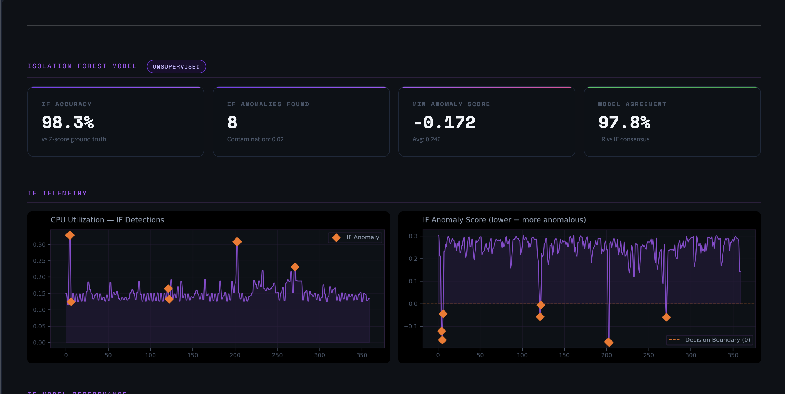

project_01.sh

CloudSentinel
AI-powered anomaly detection system deployed on AWS. Uses an Isolation Forest model to ingest live hardware metrics (CPU load, data usage) from EC2 via CloudWatch, flags anomalies, and triggers autonomous responses (server pause or shutdown) based on severity. Dashboard hosted on the EC2 instance itself.
::Python
::Isolation Forest
::AWS EC2
::CloudWatch
::Streamlit